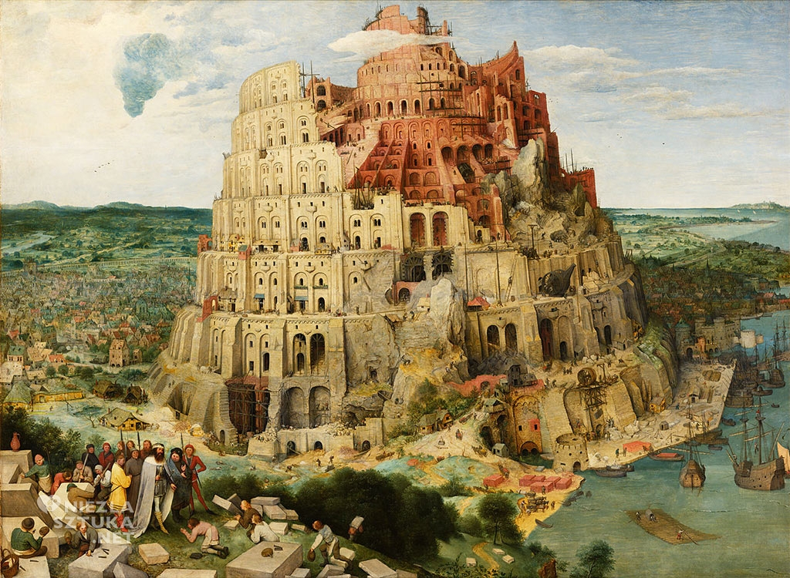
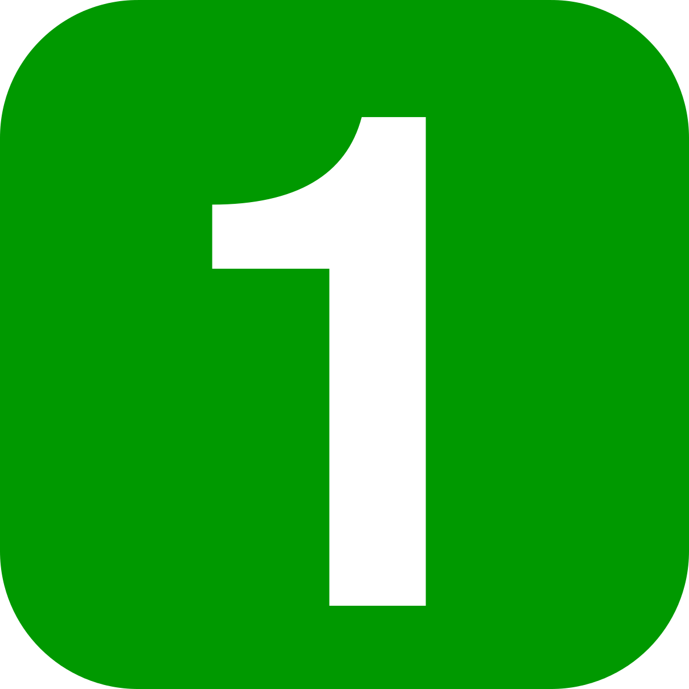

Jakub Pikus
185IC_B1
22164

Pieter Bruegel(czyt. Brojgel), Wieża Babel, 1563, olej na płótnie, 114 cm x 155 cm, Muzeum Historii Sztuki w Wedniu
Kontekst - odniesienie literackie (np. inne dzieła, do których powołuje się dany utwór) oraz pozaliterackie (czas powstania, biografia autora itp.), które są istotne dla zrozumienia utworu.
s. 102

Zinterpretuj obraz Pietera Bruegla
a) Dokładnie przyjrzyj się obrazowi, a następnie określ jego temat.
b) Odwołaj się do fragmentu Biblii (s. 73) i potraktuj go jako kontekst.
c) Odpowiedz na pytania.
d) Wyjaśnij, dlaczego według ciebie:
a) Dokładnie przyjrzyj się obrazowi, a następnie określ jego temat.
b) Odwołaj się do fragmentu Biblii (s. 73) i potraktuj go jako kontekst.
c) Odpowiedz na pytania.
- Jak się zachowują ludzie budujący wieżę?
- Dlaczego - twoim zdaniem - ludzie nadal wznoszą wieżę? Skorzystaj z podanych zwrotów.
wierzą we własne możliwości, kierują nimi zrzumiałość i pycha, są ambitni
chcą za wszelką cenę udowodnić, że potrafią doprowadzić pracę do końca
pracują, gdyż są do tego zmuszani
chcą za wszelką cenę udowodnić, że potrafią doprowadzić pracę do końca
pracują, gdyż są do tego zmuszani
d) Wyjaśnij, dlaczego według ciebie:
- część budowli się rozpada,
- górne poziomy nie są ukończone,
- ósmy poziom jest zaledwie rozpoczęty; możesz się odwołać do symboliki liczb (s. 72).
67